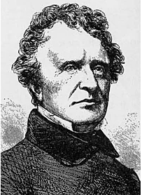

William Blake (Londres, Inglaterra); 28 de noviembre de 1757 ibídem; 12 de agosto de 1827 fue un poeta, pintor, grabador y místico inglés. Aunque permaneció en gran parte desconocido durante el transcurso de su vida, actualmente el trabajo de Blake cuenta con una alta consideración. Por la relación que en su obra tienen la poesía y sus grabados respectivos suele ponerse a Blake como ejemplo del «artista total». Según el periódico The Guardian, «William Blake es con gran margen el mayor artista que Gran Bretaña ha producido». Considerar los logros de Blake en poesía o en las artes visuales por separado sería perjudicial para entender la magnitud de su obra: Blake veía estas dos disciplinas como dos medios de un esfuerzo espiritual unificado, y son inseparables para apreciar correctamente su trabajo.
John Neal (25 de agosto de 1793-20 de junio de 1876) fue un escritor, crítico, editor, conferencista y activista estadounidense. Considerado excéntrico e influyente, pronunció discursos y publicó ensayos, novelas, poemas y cuentos entre las décadas de 1810 y 1870 en los Estados Unidos y Gran Bretaña, en los cuales defendió el nacionalismo y regionalismo literario estadounidense en sus primeras etapas. Neal impulsó el desarrollo del arte estadounidense, luchó por los derechos de las mujeres, abogó por el fin de la esclavitud y los prejuicios raciales y ayudó a establecer el movimiento de gimnasia estadounidense.
Además fue un hombre en gran parte autodidacta que no asistió a ninguna escuela después de los doce años de edad, era un niño trabajador que dejó el trabajo por cuenta propia en el sector de «Dry Goods» (productos secos) a los veintidós años para seguir una doble carrera en derecho y literatura. A la mediana edad, Neal había logrado una cómoda riqueza y una posición comunitaria en su localidad natal, Portland, en el estado de Maine, a través de diversas inversiones comerciales, patrocinio artístico y liderazgo cívico.